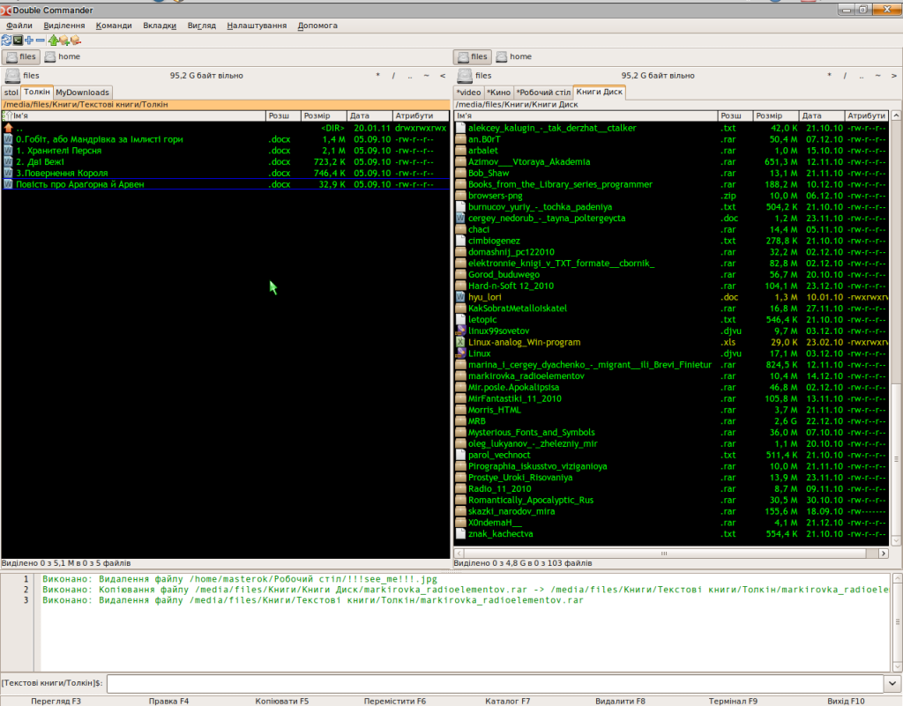

Double Commander — це кросплатформенний файловий менеджер з двума панелями. Ціллю даного проекту являється створення файл-менеджера, аналогічного по функціональності Total Commander і сумісного з його плагінами. Double Commander абсолютно безкоштовний і поширюється з відкритим вихідним кодом (по ліцензії GNU GPL версій 2).
Ось деякі характеристики Double Commander:
всі операції виконуються у фоновому режимі
підтримка вкладок файлових панелей
налаштовувані панелі інструментів з кнопками для запуску зовнішніх програм чи внутрішніх команд меню
можливості для групового переіменування
налаштовувані колонки
вбудований переглядач файлів (F3) для перегляду файлів БУДЬ-ЯКОГО РОЗМІРУ в шістнадцятковому, двійковому або текстовому форматі
вбудований текстовий редактор (F4) c підсвіткою синтаксису
робота з архівами так як і з підкаталогами. Ви можете легко копіювати файли в архів і з нього. Підтримуються наступні типи архівів ZIP, TAR GZ, TGZ, а також BZ2, RPM, CPIO, DEB, RAR
розширений пошук файлів, включаючи пошук тексту в будь-яких файлах
підтримка WCX, WDX і WFX плагінів від Total Commander
протоколювання файлових операцій
і т.п...
Зовнішній вигляд Double Commander

Увага: так як проект в теперішній час активно розвивається, представлена в цьому документі інформація може бути неповною чи не актуальною.